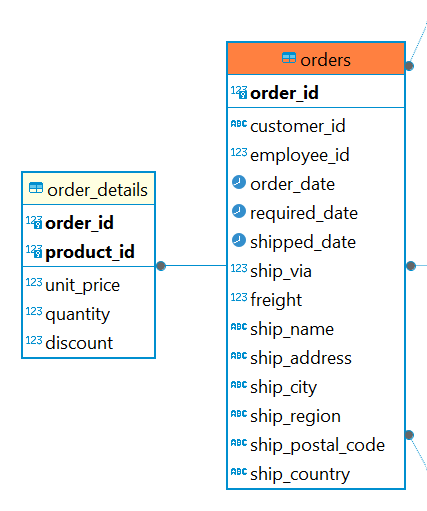
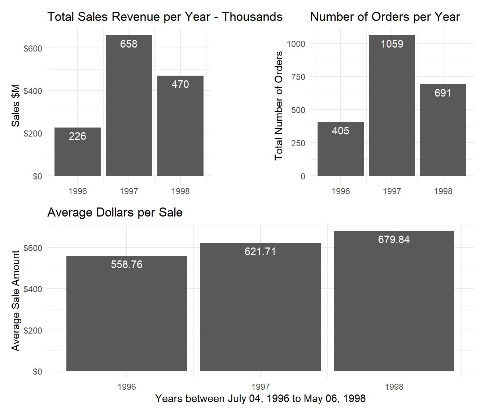
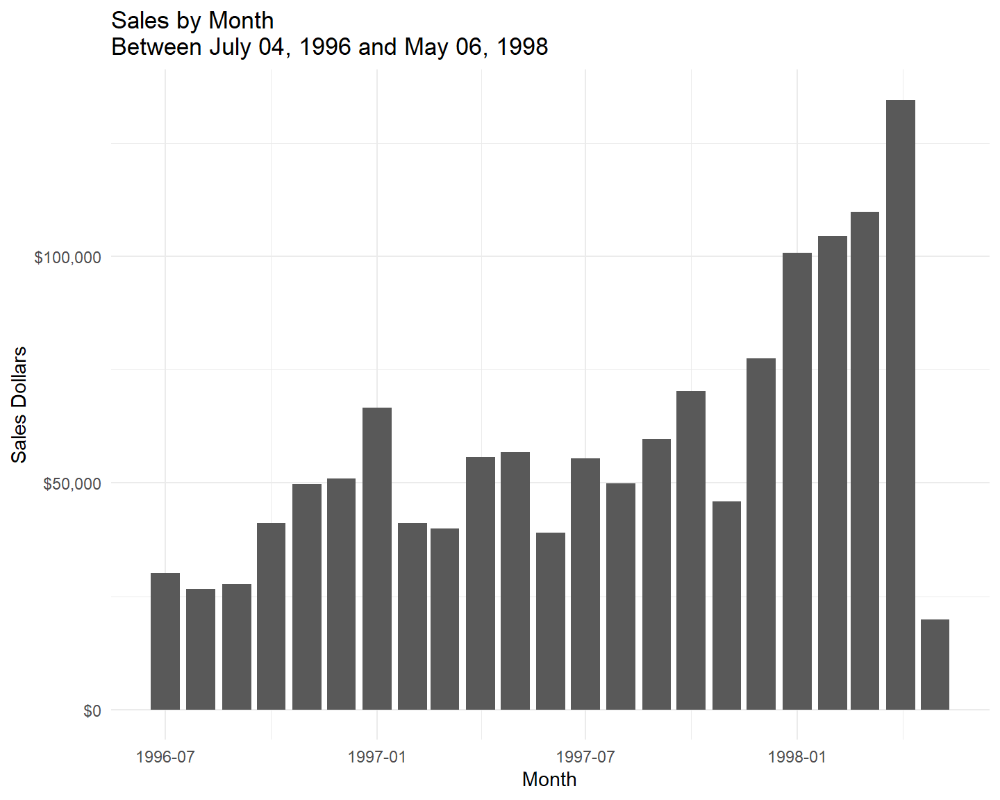
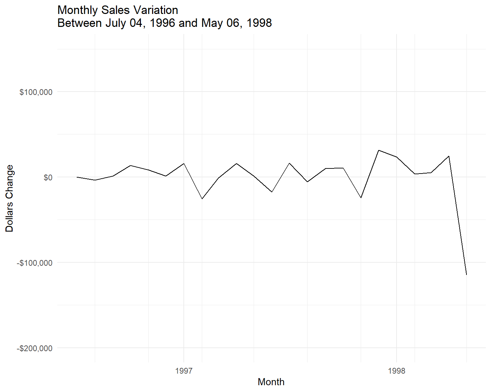
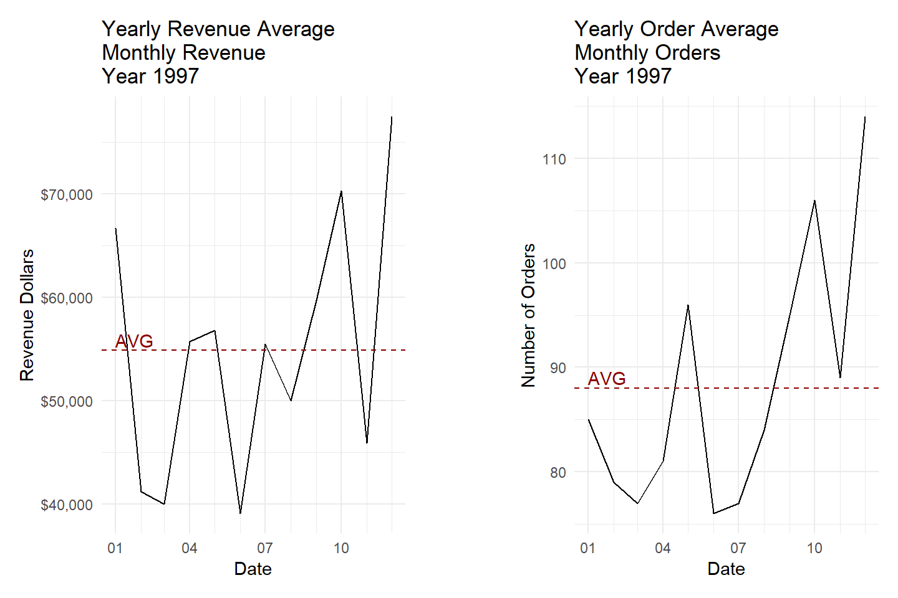

library(DBI)
library(dbplyr)
library(tidyverse)
library(knitr)
library(DT)
library(patchwork)
library(glue)
theme_set(theme_minimal(base_size = 12))Questions and Solutions
What is the annual variation in sales revenue and number of orders?
What is the monthly variation in sales revenue?
How do monthly revenue and orders compare to the yearly average?
Steps to answer the questions
Identify the tables that contain the sales revenue and order data
Understand the schema, columns that store date, sales, and orders
Use SQL and R to retrieve, prepare and summarize data
Data Visualization
Data Interpretation
Tools used to achieve this
Prerequisites
Connect to the database
con <- DBI::dbConnect(RPostgres::Postgres(),
dbname = 'northwind',
host = 'localhost',
port = 5432,
user = 'postgres',
password = 'postgres')
dbListTables(conn = con) ## list tables in the database [1] "us_states" "customers" "orders"
[4] "employees" "shippers" "products"
[7] "order_details" "categories" "suppliers"
[10] "region" "territories" "employee_territories"
[13] "customer_demographics" "customer_customer_demo" "sales_revenue" The data used to answer the questions can be found in two tables: orders and order_details.
Entity Relationship Diagram.
 Source DBeaver
What is the annual variation in sales revenue and number of orders?
sales_revenue <- "
select
min(o.order_date) as start_date,
max(o.order_date) as end_date,
extract(year from o.order_date) as year,
count(*) as order_number,
round(cast(sum(od.unit_price* od.quantity) as numeric),
2) as total_revenue,
round(cast(avg(od.unit_price* od.quantity)as numeric),
2) as avg_revenue
from public.order_details od
inner join public.orders as o on od.order_id = o.order_id
group by year
order by year;
"
sales_revenue_tbl <- (dbGetQuery(con, sales_revenue))kable(sales_revenue_tbl)| start_date | end_date | year | order_number | total_revenue | avg_revenue |
|---|---|---|---|---|---|
| 1996-07-04 | 1996-12-31 | 1996 | 405 | 226298.5 | 558.76 |
| 1997-01-01 | 1997-12-31 | 1997 | 1059 | 658388.8 | 621.71 |
| 1998-01-01 | 1998-05-06 | 1998 | 691 | 469771.3 | 679.84 |
Annual summary of sales, number of orders and average sale
Code
total_revenue <- ggplot(sales_revenue_tbl, aes(x = year, y =(total_revenue/1000)))+
geom_col()+
geom_text(aes(label = round(total_revenue/1000)), vjust = 1.5, color = "white")+
scale_y_continuous(labels = scales::dollar_format())+
labs(
title = "Total Sales Revenue per Year - Thousands",
x = NULL,
y = "Sales $M"
)+
theme_minimal()
total_revenue <- ggplot(sales_revenue_tbl, aes(x = year, y =(total_revenue/1000)))+
geom_col()+
geom_text(aes(label = round(total_revenue/1000)), vjust = 1.5, color = "white")+
scale_y_continuous(labels = scales::dollar_format())+
labs(
title = "Total Sales Revenue per Year - Thousands",
x = NULL,
y = "Sales $M"
)+
theme_minimal()
order_number <- ggplot(sales_revenue_tbl, aes(x = year, y = as.numeric(order_number)))+
geom_col()+
geom_text(aes(label = as.numeric(order_number)), vjust = 1.5, color = "white")+
labs(
title = "Number of Orders per Year",
x = NULL,
y = "Total Number of Orders"
)+
theme_minimal()
avg_revenue <- ggplot(sales_revenue_tbl, aes(x = year, y = avg_revenue))+
geom_col()+
geom_text(aes(label = avg_revenue), vjust = 1.5, color = "white")+
scale_y_continuous(labels = scales::dollar_format())+
labs(
title = "Average Dollars per Sale",
x = "Years between July 04, 1996 to May 06, 1998",
y = "Average Sale Amount"
)+
theme_minimal()
(total_revenue + plot_spacer() + order_number + plot_layout(widths = c(4, -1, 4))) / avg_revenue
Insights
- As 1996 and 1998 are shorter than 1997, interpreting comparisons is difficult.
- The sales revenue and the number of orders for the first five months of 1998 are greater than those for the last five months for the year of 1996. Since the comparison is not for the same period or consecutive years, it is difficult to determine if the sales are trending upward, downward, or flat. However even though the context is different, we can say that we have an evolution with sales revenue doubling in five months in 1998 compared with five months in 1996.
- For each year, the average dollar amount of sales increases from year to year based on the average dollar amount of sales.
How about the monthly sales?
What is the monthly variation in sales revenue?
To have the monthly sales revenue and number of orders, the previous query is modified as follows:
monthly_revenue <- "
select
cast(date_trunc('month', o.order_date) as date) as sales_month,
count(*) as total_number,
round(cast(sum(od.unit_price* od.quantity)as numeric)) as monthly_revenue
from public.orders o
inner join public.order_details od on o.order_id = od.order_id
group by sales_month
order by sales_month;
"
monthly_revenue_tbl <- (dbGetQuery(con, monthly_revenue))Monthly sales revenue and number of orders
Code
min_order_date <- min(sales_revenue_tbl$start_date)
max_order_date <- max(sales_revenue_tbl$end_date)
(monthly_revenue_plot <- ggplot(monthly_revenue_tbl, aes(x = sales_month, y = monthly_revenue))+
geom_col()+
scale_y_continuous(labels = scales::dollar_format())+
theme(
plot.title = element_text(size= 12),
plot.title.position = "plot"
)+
labs(
title = glue("Sales by Month \n",
"Between ", {format(min_order_date, "%B %d, %Y")}, " and ",
{format(max_order_date, "%B %d, %Y")}
),
x = "Month",
y = "Sales Dollars"
)+
theme_minimal())
The graph shows that the sales generally increase over time. However, there is much variation from one month to another. As there is month-over-month sales variation we can use the lag() function (SQL) to help to find the delta.
monthly_var_revenue <- "
with monthly_revenue as
(select
cast(date_trunc('month', o.order_date) as date) as sales_month,
count(*) as total_number,
round(cast(sum(od.unit_price* od.quantity)as numeric)) as monthly_revenue
from public.orders o
inner join public.order_details od on o.order_id = od.order_id
group by sales_month
order by sales_month),
prev_month_revenue as
(select
mr.sales_month,
mr.total_number,
mr.monthly_revenue,
lag(mr.monthly_revenue, 1, mr.monthly_revenue) over (order by mr.sales_month) as prev_month_revenue
from monthly_revenue mr)
select
pmr.sales_month,
pmr.total_number,
pmr.monthly_revenue,
prev_month_revenue,
pmr.monthly_revenue - pmr.prev_month_revenue as delta_revenue
from prev_month_revenue pmr;
"
monthly_var_revenue_tbl <- (dbGetQuery(con, monthly_var_revenue))Monthly sales revenue and number of orders
The graph above shows that data has a left-tailed distribution. We can use the summary() function (R) to return descriptive statistics.
median(monthly_var_revenue_tbl$delta_revenue)[1] 3707(summary_delta_revenue <- summary(monthly_var_revenue_tbl$delta_revenue)) Min. 1st Qu. Median Mean 3rd Qu. Max.
-114732.0 -2405.0 3707.0 -447.5 14643.5 31563.0 We can see that the median is positive ($3.707) while the mean is negative: (447.5). Month-over-month sales data shows a wide spread between the lower and upper quartiles.
Code
(monthly_var_revenue_plot <- ggplot(monthly_var_revenue_tbl, aes(x = sales_month, y = delta_revenue))+
scale_x_date(date_breaks = "year", date_labels = "%Y", date_minor_breaks = "3 months") +
geom_line()+
scale_y_continuous(limits = c(-200000, 150000), labels = scales::dollar_format())+
theme(
plot.title = element_text(size= 12),
plot.title.position = "plot"
)+
labs(
title = glue("Monthly Sales Variation \n",
"Between ", {format(min_order_date, "%B %d, %Y")}, " and ",
{format(max_order_date, "%B %d, %Y")}
),
x = "Month",
y = "Dollars Change"
)+
theme_minimal()
)
Insights
- With real data, we would want to investigate more to understand the business context that occurred in May of 1998. With these data, we know that the data collection ended at the beginning of May 1998 which can explain the gap compared with the previous month.
We have the data for the entire year of 1997 and we can look at revenue and number of orders together and compare the monthly data to the yearly average. By comparing monthly sales to yearly average, businesses can identify which months consistently perform above or below average, helping in informing various business decisions.
How do monthly revenue and orders compare to the yearly average?
SQL Query
month_data_year_avg <- "
with montly_data as
(select
cast(date_trunc('month', o.order_date) as date) year_month,
count(*) as monthly_orders,
round(cast(sum(od.unit_price* od.quantity)as numeric)) as monthly_revenue
from public.orders o
inner join public.order_details od on o.order_id = od.order_id
where extract(year from o.order_date) = 1997
group by year_month
order by year_month)
select
md.year_month,
md.monthly_orders,
md.monthly_revenue
from montly_data md
order by md.year_month;
"
month_data_year_avg_tbl <- (dbGetQuery(con,month_data_year_avg))Monthly sales data and Yearly averages
Code
yearly_rev_avg <- mean(month_data_year_avg_tbl$monthly_revenue)
month_data_year_avg_rev_plot <- ggplot(month_data_year_avg_tbl, aes(x = year_month, y = monthly_revenue))+
geom_line()+
scale_x_date(date_labels = "%m", date_minor_breaks = "1 month")+
scale_y_continuous(labels = scales::dollar_format())+
geom_hline(yintercept = yearly_rev_avg ,
color = "darkred",
linetype = "dashed")+
annotate("text",
x = min(month_data_year_avg_tbl$year_month),
y = yearly_rev_avg +1000,
label = "AVG",
color = "darkred",
hjust = 0
)+
theme(
plot.title = element_text(size= 12),
plot.title.position = "plot"
)+
labs(
title = glue( "Yearly Revenue Average \n",
"Monthly Revenue \n",
"Year 1997"),
x = "Date",
y = "Revenue Dollars"
)+
theme_minimal()
yearly_order_avg <- mean(month_data_year_avg_tbl$monthly_orders)
month_data_year_avg_order_plot <- ggplot(month_data_year_avg_tbl, aes(x = year_month, y = as.numeric(monthly_orders)))+
geom_line()+
scale_x_date(date_labels = "%m", date_minor_breaks = "1 month")+
geom_hline(yintercept = yearly_order_avg ,
color = "darkred",
linetype = "dashed")+
annotate("text",
x = min(month_data_year_avg_tbl$year_month),
y = yearly_order_avg +1,
label = "AVG",
color = "darkred",
hjust = 0
)+
theme(
plot.title = element_text(size= 12),
plot.title.position = "plot"
)+
labs(
title = glue( "Yearly Order Average \n",
"Monthly Orders \n",
"Year 1997"),
x = "Date",
y = "Number of Orders"
)+
theme_minimal()
month_data_year_avg_rev_plot + plot_spacer() + month_data_year_avg_order_plot+ plot_layout(widths = c(4, -1, 4))
Insights
- Both the monthly sales revenue and number of orders vary widely compared with the yearly average.
- The highest values for sales revenue are at the beginning and the end of the year while the lowest values are in the first half of the year. This indicates that the business can have seasonal fluctuations in sales.
- This is also supported by the number of orders placed each month. The highest number of orders is in the second half of the year which can explain the increased revenue at the final of the year.
Knowing in which months the business performs below or above the average can help in the strategic planning of the company and the allocation of resources.
For example :
when the sales volumes are low the business can design loyalty programs that encourage repeated business during slower months;
during off-peak times the company can plan training programs to ensure that the staff are fully equipped for busy periods;
targeted campaigns by allocating budgets to peak seasons to maximize returns or promotions during low-performing months to increase sales.
Comparing monthly sales data to yearly averages is a powerful analytical tool that provides deep insights into business performance, aids in strategic planning and drives informed decision-making. It allows businesses to adapt proactively to changes, optimize operations, and achieve better financial outcomes.
# Close the database connection
dbDisconnect(con)